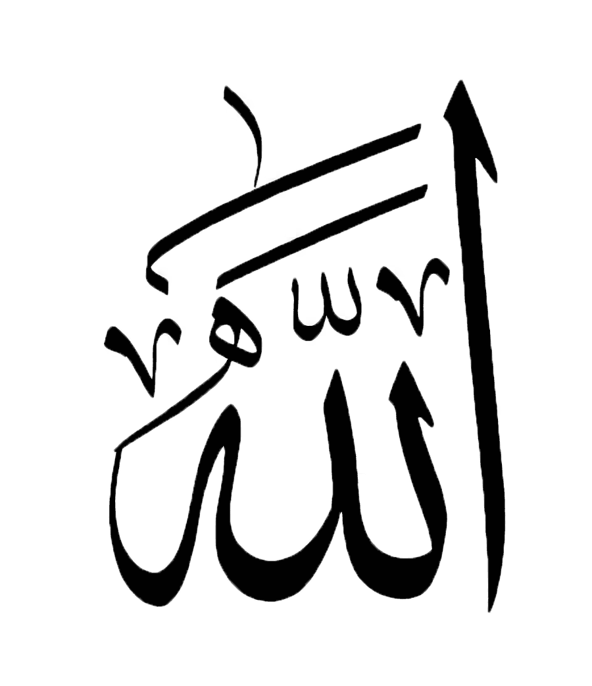

Mehribon va rahmli Alloh nomi bilan
Rasululloh sollallohu alayhi vasallamning siyratlari bo'yicha viktorina o'yini. Bu dastur tuzulish davomida savollar Abdul Azim Ziyouddinning "Siz Payg'ambarni Ko'rganmisiz?" kitobidan foydalanildi. Javoblar izohini shu kitobdan topishingiz mumkin.
Alloh roziligi uchun qilingan bu harakatimizni boshqa ishtirokchilarning qilgan harakatlari oldida chaqirilmagan bir mehmon sifatida qabul qilgaysiz. Agar bu dasturdan birorta foyda olgan bo'lsangiz yolg'iz Alloh inoyati bilan, agar xato va kamchiliklar bo'lsa ojiz kaminandan deb hisoblagaysiz
Hurmat bilan Abduvohidov Abdug'afforxon Abdullaxon o'g'li